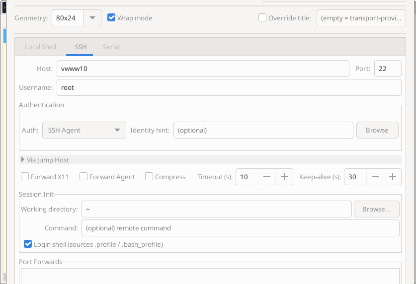
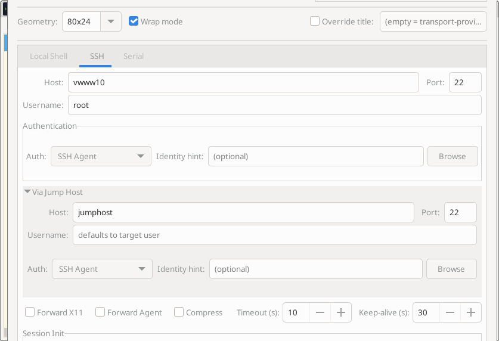
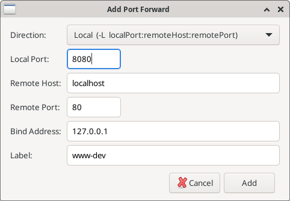
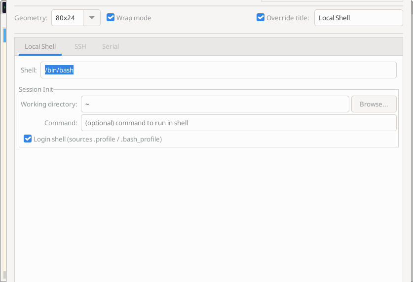
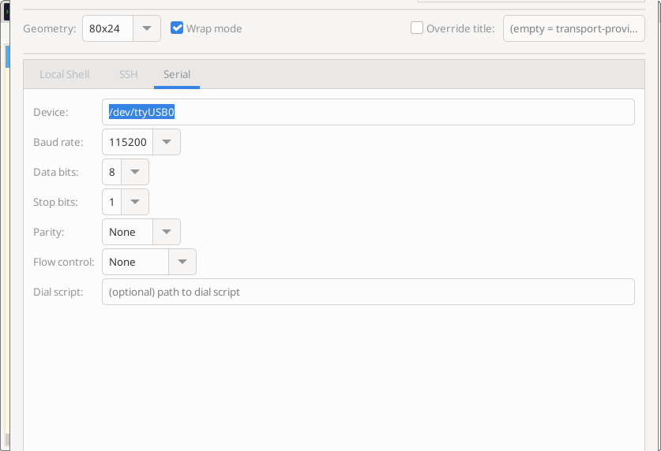
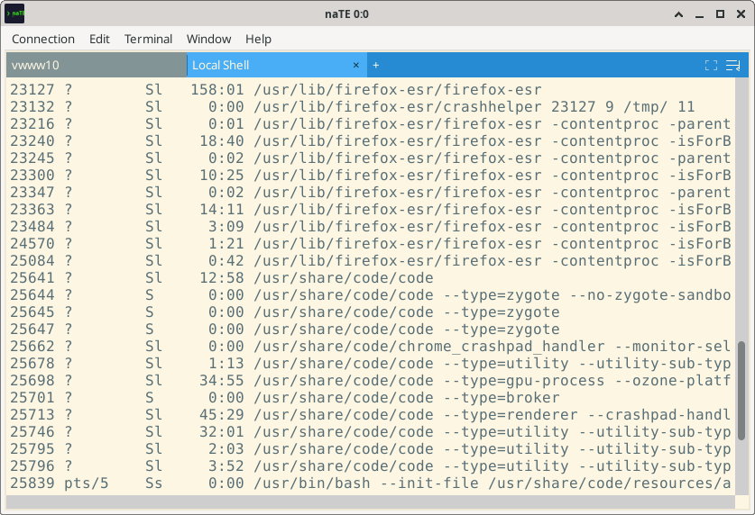
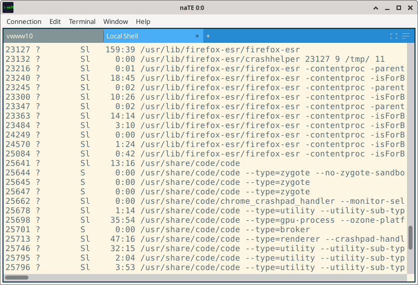
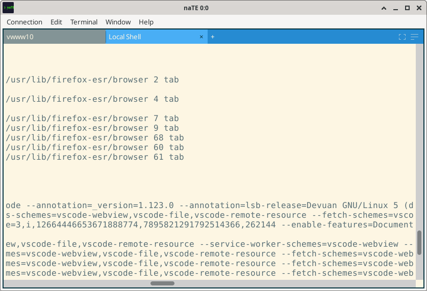

Connections
How to connect to remote hosts, local shells, and serial devices — and how to manage saved profiles.
The New Connection Dialog
Open it with Ctrl+N or Connection → New Connection. The dialog has three transport tabs — SSH, PTY, and Serial — plus shared options at the bottom for geometry, wrap mode, and placement.
Placement
The Open in control at the bottom of the dialog determines where the new session lands:
- Active tile — opens as a new tab in the currently focused tile
- New tile — expands the current window and gives the session its own tile
- New window — opens a separate naTE window
You can also open a connection directly in the active tile without opening the dialog: Connection → New Connection in Tab.
SSH Connections
SSH is the most feature-rich transport. Select the SSH tab in the New Connection dialog.

Basic settings
| Field | Description |
|---|---|
| Host | Hostname or IP address. naTE looks it up in ~/.ssh/config and pre-fills other fields. |
| Port | Default is 22. Changed automatically if your ssh config specifies a port. |
| Username | SSH login user. Pulled from ssh config or system username if blank. |
| Remote command | Optional command to run instead of a login shell (e.g. tmux attach). |
Authentication
naTE supports four authentication methods. Select one from the Auth drop-down:
SSH Agent
Uses the running SSH agent ($SSH_AUTH_SOCK). No passphrase prompts — the agent handles signing. If you have multiple keys loaded you can set an Identity hint to tell naTE which key to prefer; it reads your ~/.ssh/config IdentityFile entries and matches by public key.
Private Key
Specify a path to a PEM/OpenSSH private key file. naTE will prompt for the passphrase inline if the key is encrypted.
Password
Enter your password in the connection dialog. The password is never stored in the connection profile — naTE will ask for it each time.
Keyboard-Interactive (MFA)
For servers that use PAM, Duo, YubiKey, or other multi-factor schemes. naTE pops up a dialog for each challenge the server sends, so you can respond to "Passcode:" or "Push notification sent to…" prompts without pre-configuring anything.
ProxyJump / Bastion Hosts
naTE supports a single ProxyJump hop. Enable the Via Jump Host expander and enter the bastion hostname. If your ~/.ssh/config already defines a ProxyJump rule for the target host, naTE auto-detects it when you type the hostname — the field fills in automatically and you can just click Connect.

How it works: naTE opens a direct TCP connection to the bastion, authenticates, then opens a TCP-forward channel through it to reach the target host. Your target host authentication (agent, key, etc.) is handled as normal over that tunnel.
Advanced SSH Options
| Option | Description |
|---|---|
| Connection timeout | Seconds to wait for the initial TCP connection before giving up |
| Compression | Enable SSH compression (useful on slow or high-latency links) |
| X11 forwarding | Forward X11 display back to your local desktop. See X11 Forwarding. |
| Agent forwarding | Forward your SSH agent to the remote host so you can SSH onward without re-authenticating. |
Port Forwards
The SSH tab carries a Port Forwards box listing the tunnels this connection should open. Forwards added here are saved with the profile and set up automatically on every connect, so a tunnel you always need is never something you have to remember. Click Add... to define one; select an entry and click Remove to drop it. Remove stays disabled until something is selected.

| Field | Description |
|---|---|
| Direction | Local (-L) binds a port on your machine and tunnels it to a host reachable from the remote side. Remote (-R) binds a port on the remote host and tunnels it back to a host reachable from yours. The dropdown spells out the ssh argument order for each. |
| Local Port | For -L, the port naTE opens on your machine. For -R, the port naTE connects to when traffic arrives back through the tunnel. |
| Remote Host / Connect Host | Where the tunnel terminates. For -L this is Remote Host, resolved from the remote side — localhost means the server you are connected to. For -R the label changes to Connect Host and it is resolved from your side, so localhost means your own machine. |
| Remote Port | For -L, the port on the remote host that the tunnel connects to. For -R, the port the SSH server listens on. |
| Bind Address | Which interface the listening port binds to — your machine for -L, the remote host for -R. The default 127.0.0.1 keeps the tunnel reachable only from the machine holding the listener; use 0.0.0.0 to expose it to that machine's network. |
| Label | Optional name, shown in the list and in the in-session panel. Useful once you have several forwards on one host. |
Saved forwards appear in the list in a short form — L 8080 → localhost:80 [www-dev] for a local forward, R with the arrow reversed for a remote one.
Forwards can also be added mid-session from the PFW button in the tile title bar, without reconnecting — including on connections that were not started from a profile. That panel is also where you see live status and any errors, such as a forward refused by the server's AllowTcpForwarding policy. See Port Forwarding for the full picture.
Remote forwards depend on the server. For -R, the bind address is honoured only if the SSH server allows it — OpenSSH ignores anything but the loopback interface unless GatewayPorts is enabled in sshd_config. If a remote forward binds but is unreachable from other machines, that setting is the usual reason.
Session Initialization
These options are shared between SSH and PTY and control the environment the shell starts in:
| Option | Description |
|---|---|
| Working directory | Change to this directory immediately after the shell starts |
| Environment variables | Key=value pairs injected into the session environment |
| Environment file | Path to a .env-style file; variables are loaded and merged at session start |
| Login shell | Invoke the shell as a login shell (-l), loading profile scripts |
| Profile title | Fixed tab title that overrides the dynamic hostname/command display |
Working directory on SSH: naTE also tracks the current working directory while a session is running via the OSC 7 shell integration escape sequence. Shells that emit this sequence (zsh with the right prompts, modern bash configs) will keep naTE's CWD tracking up to date continuously, and the final CWD is captured at disconnect for accurate session restore.
PTY (Local Shell) Connections
PTY sessions run a shell on your local machine in a pseudo-terminal. Select the Local Shell tab.

Options
| Option | Description |
|---|---|
| Shell | Path to the shell executable. Defaults to $SHELL or /bin/sh. |
| Command | Optional command to run in the shell (e.g. python3 script.py) |
| Working directory | Starting directory (defaults to the directory naTE was launched from) |
| Login shell | Invokes the shell with -l to load profile scripts |
| Environment variables | Extra variables injected on top of the inherited environment |
| Environment file | Load a .env file for variables (e.g. project secrets) |
Serial Connections
Serial connections are for embedded systems, network hardware, and anything accessible via a serial console. Select the Serial tab.

Options
| Option | Description |
|---|---|
| Device | Serial device path, e.g. /dev/ttyUSB0, /dev/ttyS0 |
| Baud rate | Standard rates: 9600, 19200, 38400, 57600, 115200 (most common), 230400, … |
| Data bits | 5, 6, 7, or 8 (default 8) |
| Stop bits | 1 or 2 (default 1) |
| Parity | None (default), Even, Odd |
| Flow control | None (default), RTS/CTS, XON/XOFF |
| Dial script | Optional command sequence sent to the device before I/O begins (modem AT commands, etc.) |
Permissions: You may need to add your user to the dialout group to access serial devices without sudo: sudo usermod -aG dialout $USER (takes effect on next login).
Terminal Geometry
At the bottom of the New Connection dialog you can choose a geometry preset (80×24, 110×24, 120×24, 132×24) or enter custom column/row counts.
Wrap mode and column width
naTE decouples two concepts that classic terminals tie together:
- Column width — what the shell thinks the terminal is. Programs like
ls,git, andgrep --coloruse this to decide where to wrap their output. - Viewport width — how wide the tile is on screen.
You can set the column width to 1024 columns in the connection dialog while the tile is only 80 columns wide. Long lines are captured fully. The Wrap button in the tile title bar then controls presentation:
- Wrap on: Lines that exceed the tile width reflow into the visible area.
- Wrap off: Lines stay on one row; the tile scrolls horizontally.



Connection Profiles
Saving a profile
At the bottom of the New Connection dialog, click Save as Profile and give it a name. The profile stores all fields in the dialog (except passwords). Saved profiles appear in Connection → Connection Manager.
Connection Manager
Open with Connection → Connection Manager. From here you can:
- Select a profile and click Connect to open it in the active tile.
- Click Connect in New Window to open it in a fresh window.
- Click Edit to change any profile settings.
- Click Delete to remove the profile.
Per-profile overrides: Each profile can override the app-wide defaults for column width, wrap mode, working directory, environment variables, and more — without affecting other profiles or the global settings.